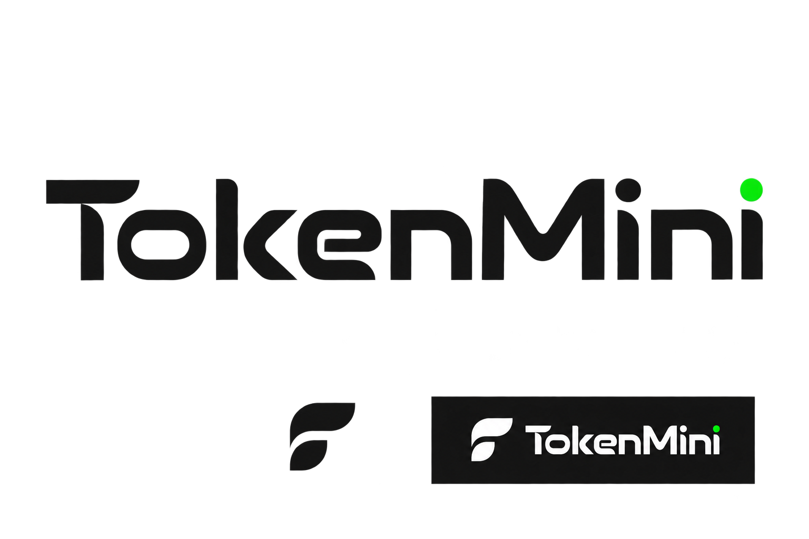
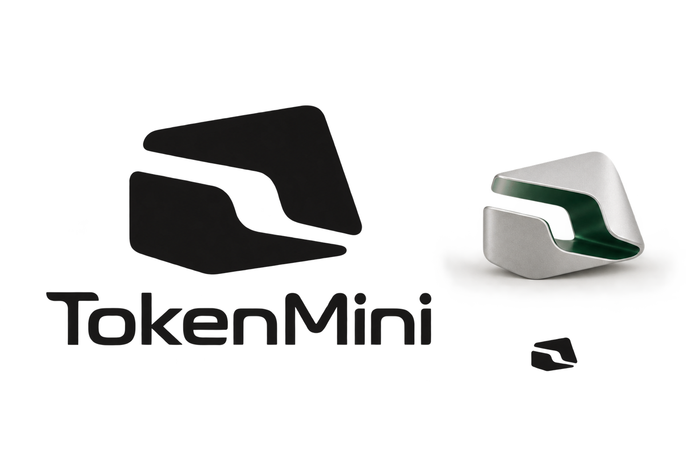
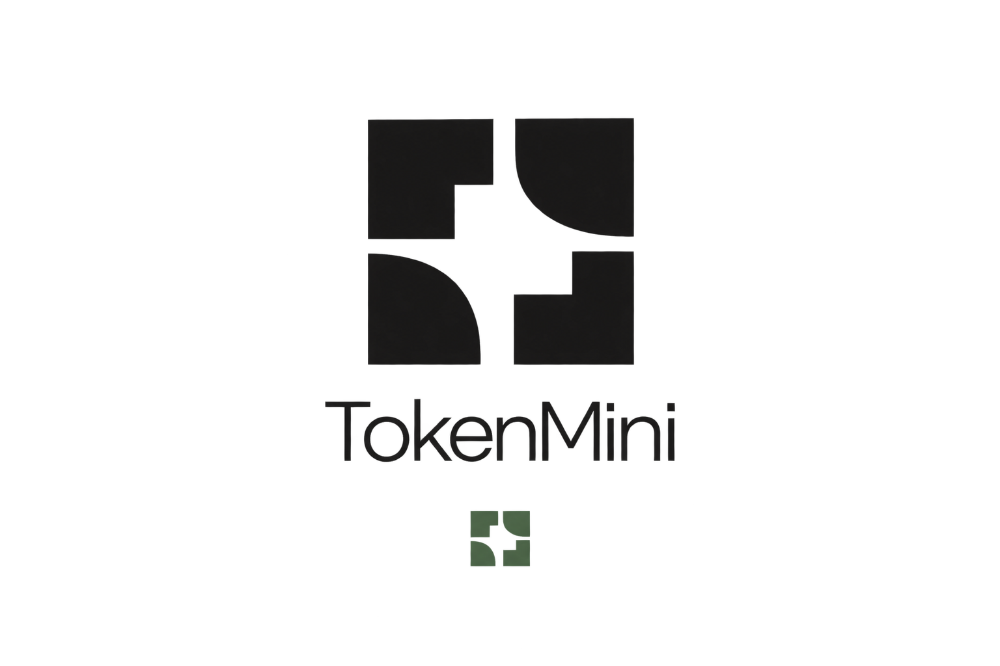

字标、空间截面、信号采样。点击图片放大，先看轮廓和比例，再看它是否适合这个产品。
历史候选记录 · 用户已选定原四片递减版本。查看已选定 Logo 的规范版 →

设计重点让 TokenMini 的文字成为主角，通过字宽、圆角和端点形成连续的节奏。
当前判断文字更完整，辅助符号仍需推敲，不能仅因为与文字放在一起就认为已经形成统一品牌。

设计重点用偏移的实体与贯穿开口构成整体形状，银色外侧与深绿色内侧表达同一物体的空间。
当前判断形体比上一轮更明确。材质版本与平面版本还需精确统一，不能直接把生成图当作几何母版。

设计重点四块离散形体通过曲线、直角与空白形成秩序，探索一种像采样单元的抽象标记。
当前判断已重做常见信号柱的初稿。这版图形更有区别，但四块之间的关系和小尺寸完整性仍需验证。